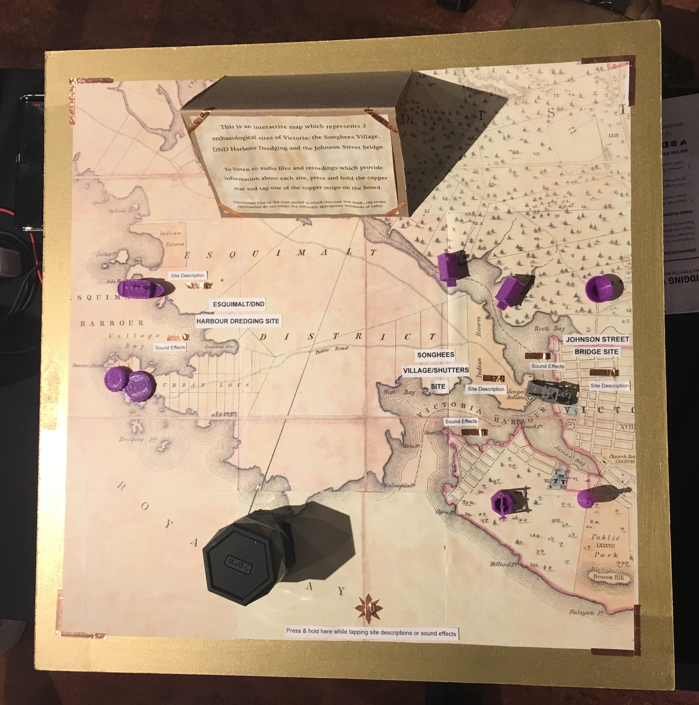
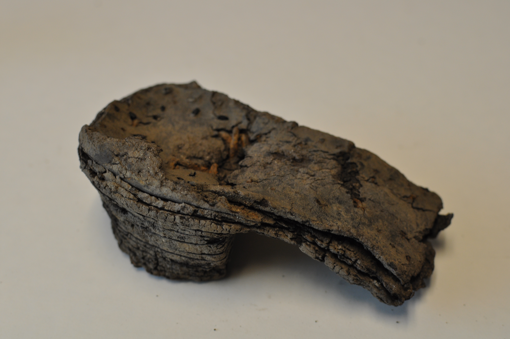

Two of my Anthropology classes at the University of Victoria taught by Katherine Cook got the opportunity to put on a pop-up exhibit at the Royal BC Museum on November 25th, 2017. The pop-up exhibit was called, "Bridging Victoria: Stories from the Archaeological Past."
The exhibit was about 3 archaeological sites in Victoria: the Songhees Village, the Department of National Defence Harbour Dredging in Esquimalt Harbour, and the Johnson Street Bridge.
I created two projects for the event, one for each class. The participating classes were, Anth 485: Digital Archaeology and Anth 392: Storytelling in Archaeology.
For my Digital Archaeology class, I and 5 other students created an interactive map displaying the three sites. Below is a video I took of it being used at the exhibit.
Our Interactive MapHere's an image of it:
{kind=link}
We made it interactive using a kit called "Makey Makey," which is a circuit board that connects to your computer. By holding the star (aka "Earth") on the board and tapping on another piece of tape across the board (site description or sound effects), you complete a circuit and audio plays! Here's a link if you would like to learn more about Makey Makey and how it works: https://makeymakey.com/.
We also had objects 3D printed and placed on the board to add to the interactivity and represent some of the artifacts found at particular sites, and a swing bridge to represent the Johnson Street Bridge.
For my Storytelling in Archaeology class, I created two audio tracks about the shoes found at the Johnson Street Bridge Site and the Songhess Village/Shutters Site.
During the day of, several shoes from the Johnson Street Bridge site were placed in a plinth with a panel telling people to scan the QR codes to reach my audio tracks.
While listening to my audio tracks view the following images, the Johnson Street Bridge Site shoes were placed in a plinth on the day of the event:
 Johnson Street Bridge Site Shoe{kind=link}
 Johnson Street Bridge Site Shoe
Johnson Street Bridge Site Shoe
 Songhees Village/Shutters Site Shoe
Songhees Village/Shutters Site Shoe
 Songhees Village/Shutters Site Shoe
Songhees Village/Shutters Site Shoe
In my first track, Shoes & Personality, I discuss what the shoes you wear say about your personality.
In my second track, Underfoot in Victoria, I discuss where these particular shoes were found in their individual sites.
During the day of the event itself I was the Event Photographer, to view images from the event click here.
We were also featured on CHEK news, click here to see that video and article, which also displays my plinth of shoes.
Participating in this exhibit was a wonderful experience and I'd love to do something like this again!!